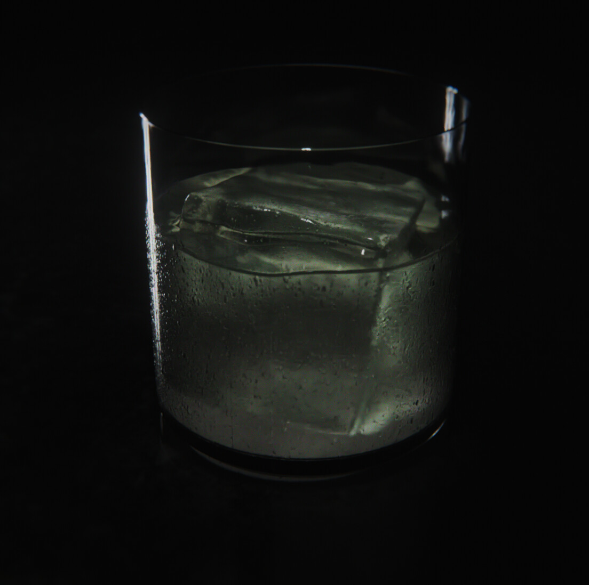
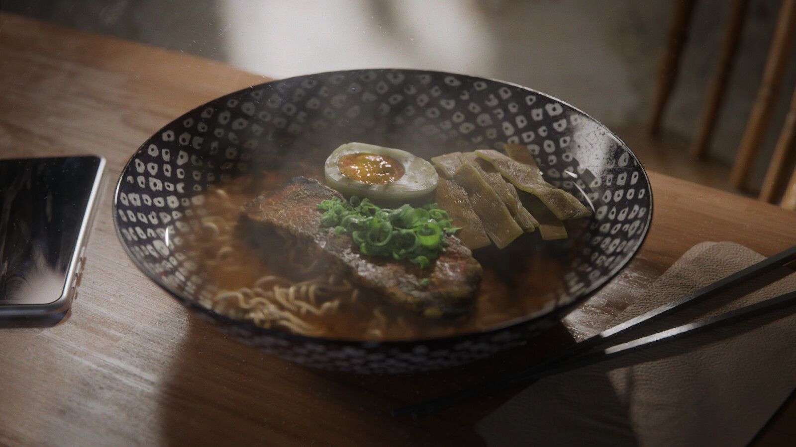
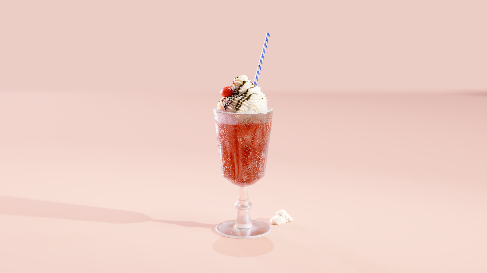

Caustics study
Glass with ice
An excuse to play with caustics in Cycles. Procedural glass and ice modelled in Houdini, then lit and rendered in Blender. Mostly about getting the refraction and condensation feeling believable in low key.

Caustics study · Cycles · graded
Restaurant study
Ramen — Stjärnan
Inspired by Stjärnan, a ramen place in Stockholm. I wanted to recreate the warm, atmospheric look of the bowls coming out of the kitchen. The noodles were simulated falling into the bowl rather than placed by hand. Textures painted in Substance Painter; everything else procedurally modelled in Houdini.

Ramen · Stjärnan-inspired · simulated noodles · Substance + Houdini → Cycles
Material study
Glass, cream and color
A study in glass shaders, whipped cream and saturated palette work — pushing how different translucent and soft materials read against a single warm backdrop. Procedural modelling in Houdini, lit in Blender.

Material study · glass, cream, saturated palette · Cycles